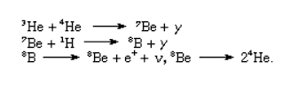
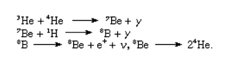

THE NEBULA
THE MAIN-SEQUENCE
All stars begin as a formation of interstellar dust and elements we call a nebula. Carbon, Nitrogen, Oxygen, Hydrogen, Helium, as well as various low mass metal elements are the main components of nebulae, making for the perfect environment for a star to form.
Once a nebula has accumulated enough mass, the dense cloud of elements in the center will gain its own gravitational pull, strong enough to begin pulling in the rest of the stardust. This pull will eventually result in the collapse of all the elements unto themselves.
This collapse, known as stellar ignition, leads to two extremely similar types of stars that will later develop into other, more independent stages. Those types being the main-sequence star, and the “massive star.”
Although the massive star and main-sequence will follow separate developmental paths, they still have the same properties in their beginnings.
The first stage where a star is truly considered a star, is once the proton-proton and carbon cycles have begun.
The Proton-Proton cycle or P-P chain refers to the thermonuclear reaction within a star in which hydrogen atoms are smashed together to create helium atoms. Hydrogen atoms are combined into two hydrogen-2 nuclei, losing a positron and a neutrino. This new nucleus quickly obtains an additional proton in order to form a helium-3 nucleus, emitting a gamma ray.
The Proton-Proton cycle will also take these new helium nuclei and use them to construct farther early elements, like beryllium and boron.
Meanwhile, the carbon cycle, or more usually known as the CNO (carbon, nitrogen, oxygen) cycle, is a similar sequence of thermonuclear reactions within a star. The reaction begins with a carbon-12 nucleus, which will grab a hydrogen nucleus in order to form a nitrogen-13 nucleus and emit a gamma ray. This nucleus then ejects a positron, and gains a proton to become a nitrogen-14 nucleus.
This new nucleus repeats the cycle of gaining a proton, and losing a positron, briefly becoming oxygen-15, before reverting to nitrogen-15. Finally, one more proton is caught and the nucleus breaks back down into a carbon-12 nucleus, but now with the addition of a new helium nucleus alongside it.
Throughout those two processes the hydrogen core will slowly gain in mass and lower in size becoming a helium core while energy levels and temperatures slowly rise. If a star has sufficient mass, it will form a convective core, cycling its heat.
The star then withstands this phase of evolution for a long period, slowly accelerating its cycles until it finally leaves the main sequence stage. The star’s core will slowly burn away most of the hydrogen, and will later be compiled of almost all helium, however it still contains trace amounts of heavier elements.
After living the majority of its life as a main sequence star, the energy within the star’s core will push outward causing the star to begin expanding, resulting in an increase in luminosity (brightness) and potentially a change in color, depending on its chemical makeup.
At this point, the star may follow two separate evolution paths depending on the density and mass of the star.
THE GIANT
THE SUPERGIANT
The star has now expanded up to 100x in size, and the core has become so dense and pressurized that it begins the fusion process with helium rather than hydrogen, allowing the production of even heavier elements like argon, silicon, cobalt, and iron.
This supersized state only lasts a few million years though, as its new helium powered core quickly begins to shrink along with the rest of the star back down to a more manageable and stable state.
Super Giant stars are the results of larger, more massive main-sequence stars that followed the same process as the regular giant. A supergiants mass and luminosity are exponentially higher than main-sequence and giant stars, one supergiant may be up to 200x heavier than our sun and up to 1,000,000x brighter. The fusion within a super giant begins using the carbon in its core for fusion, as it has burned up most of its helium, similar to the giant with its hydrogen.
Within a few million years the star will become too dense and begin to collapse under its own gravity.
THE PLANETARY NEBULA
The planetary nebula is the second last phase of a low mass star's life. In this phase the rapidly collapsing star begins to shed its outer layers, in dense hot waves of gaseous elemental flurries made of mainly hydrogen, helium, neon, oxygen, carbon, silicon, sulfur, carbon and magnesium. During their transition from the red giant phase, the star becomes violently unstable, and creates large pulses of stellar wind, further ripping apart the outer layers.
Within tens of thousands of years, the star will finally lose all outer shells and leave behind a bright, ultraviolet radiant core known as...
THE WHITE DWARF
White Dwarves, small condensed orbs constructed of mainly carbon and oxygen, shrunken down to nearly the size of earth after being starved of fuel and shedding its outer layers due to violent unstable pulsation.
The star can no longer produce energy via nuclear fusion, and simply relies on the energy it had generated in previous stages. Despite this, the compact star may still burn up to 100,000°C and take billions of years just to cool down to anywhere near the current temperature of our sun. (5,726.85°C)
If a White Dwarf’s mass is to increase, its radius decreases, slowly dragging towards a point of no return called the Chandrasekhar Limit, at which the star will become too unstable to remain, and collapse into a black hole.
THE SUPERNOVA
As we all know, this stage of a star's life occurs after it has collapsed and began to explode. But what most don't know is that there are different types of supernovae, like the type la supernova, a thermonuclear explosion only formed by a binary star system. However, we will be focusing on the type that most are familiar with, the core-collapse supernova. This type of supernova is only possible in stars at least nine times more massive than our sun.
A core-collapse occurs once the star has finally burned up every fusible element in its core, leaving it with a core of pure iron, which the star cannot use to fuse. This starvation of fusion creates an environment where the star no longer produces outward pressure to balance out the immense force of gravity trying to compact it, so the star gives in. The few remaining layers of the star are rapidly separated and pulled inwards ricocheting off the core at 30,000 kilometers per second, causing shockwaves that will only further rip the star apart into the supernova.
This explosion creates absurd amounts of energy as well as creating elements like zinc, gold, silver, mercury, tin, lead, and uranium. Throughout the explosion, the core may form into two things, either a neutron star, or a black hole. Similar to a planetary nebula, the leftover material that had been flung through space by the explosion (called supernova remnant) will later join other nebulae and form new stars.
THE NEUTRON STAR
THE BLACK HOLE
The neutron star, a hollow shell of the powerhouse it used to be, upon finally collapsing now practically lives on life support. The star has condensed so through the star's layers being ripped apart that the only thing that remains are neutrons as a result of smashed atoms.
Regardless, these husks still glow, and have remnant heat. In addition, the star is also rapidly spinning at speeds near hundreds of full revolutions per second due to the momentum gained during the explosion. The neutron star however, does hold the honor of being the second most dense object in our universe, as its mass is usually comparable to our sun, but will only have a radius of about twenty kilometers.
These stars can also be used to explain some of the little known phenomena of our universe, such as fast radio bursts (absurdly quick radio wave pulses) and soft gamma repeaters (an irregular, yet repetitive object that releases gamma rays). However, the neutron star is of course second to only the black hole
Black Holes, our most known universal anomaly. As most understand, the density and in turn the gravitational pull of these objects is far too much, to the point where not even light can escape. These physics defying monsters slowly gain in size as they consume their surroundings, be it nebulae, stars, planets, etc. Over time, they will grow to a state known as a supermassive black hole, the center of most galaxies are theorized to contain one of these.
The existence of black holes opens up the possibility for even more near inexplicable anomalies, like the gravitational-waves emitted when black holes collide, causing ripples throughout space-time. Although we usually link them to stars, a black hole can theoretically be formed by anything, given it is condensed enough.
This relation is called the Schwarzschild radius. For example, if the earth was somehow condensed down to around the size of a peanut, it would collapse under its own gravity into a black hole. But even this final state of a star eventually burns out due to hawking radiation. Hawking radiation is a theoretical process in which a small chance between our universe and the no return event horizon opens where pairs of energy particles escape, where one gets sent off into infinity, and the other is sucked back into the black hole. Leaving us with an eventual heat death of the universe.